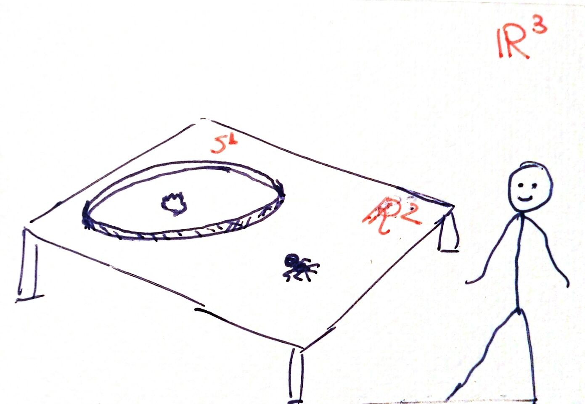
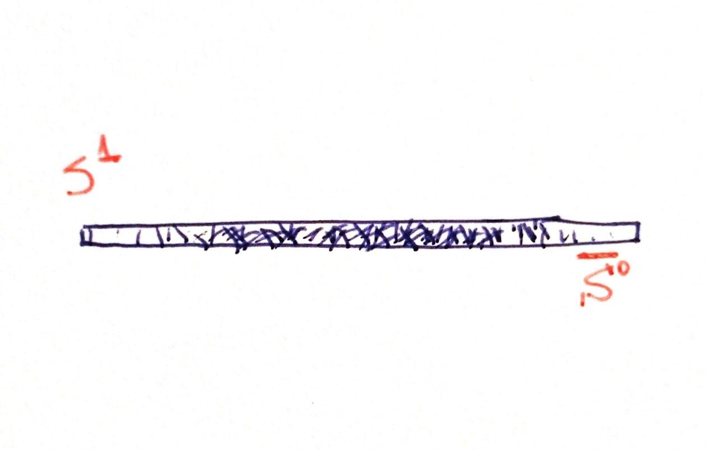
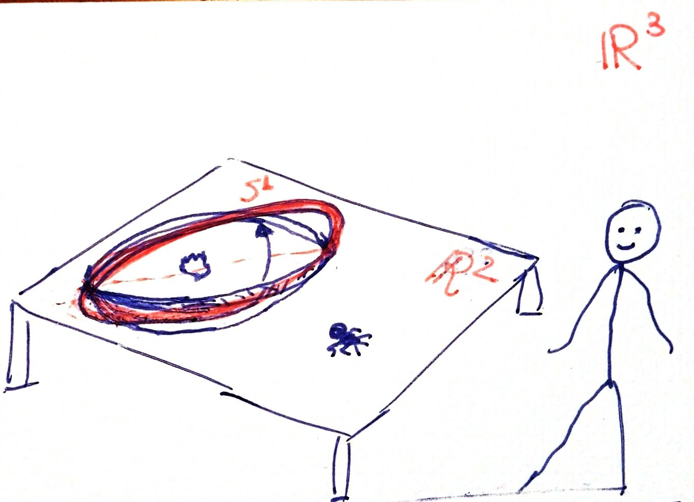
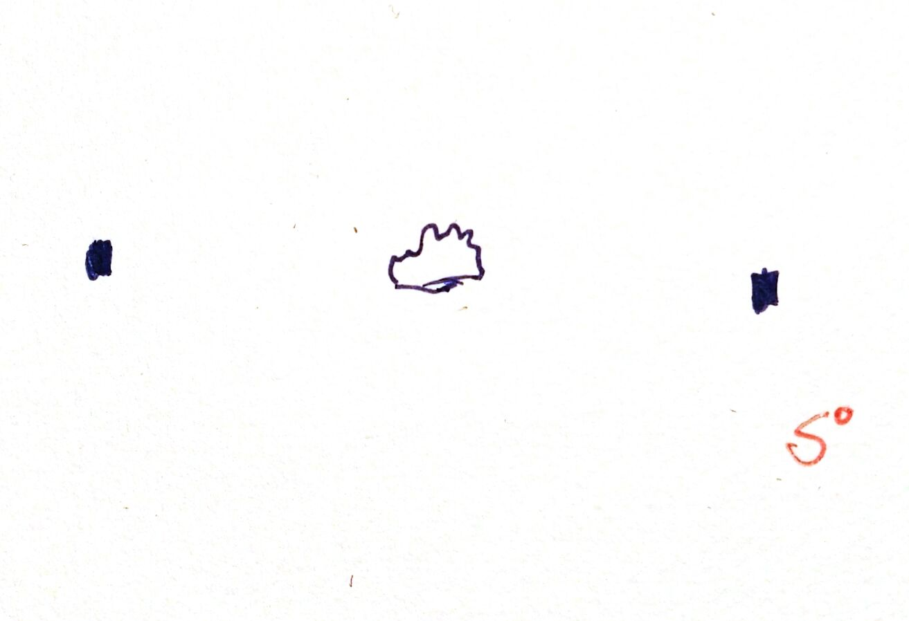
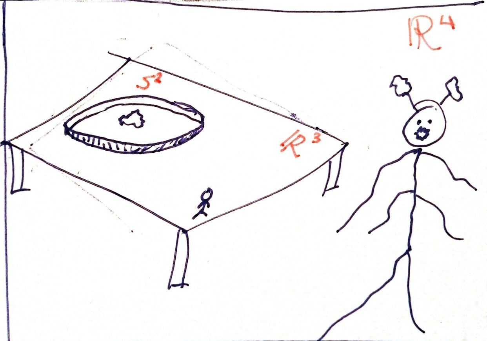
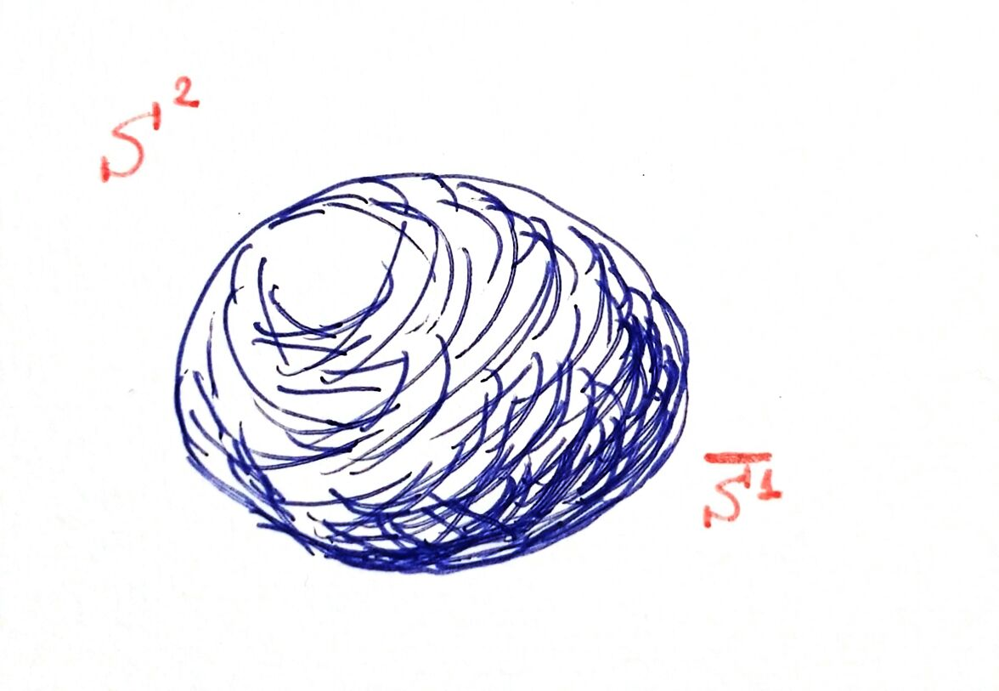
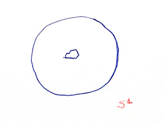
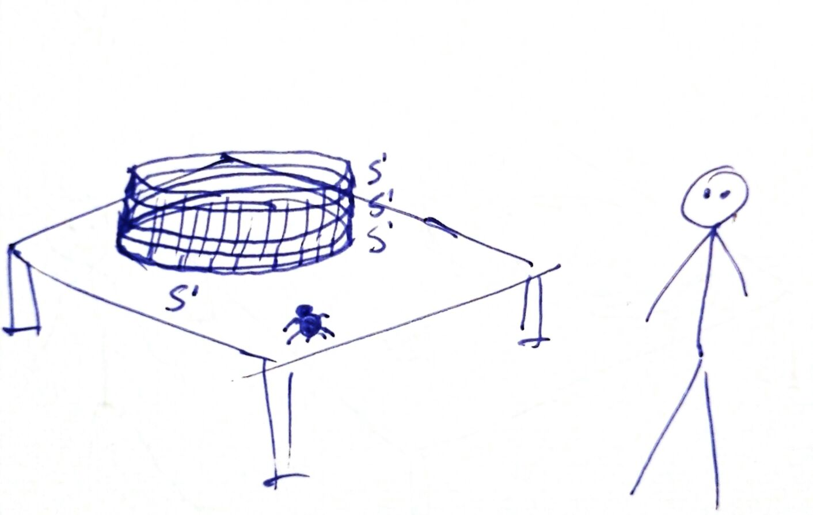
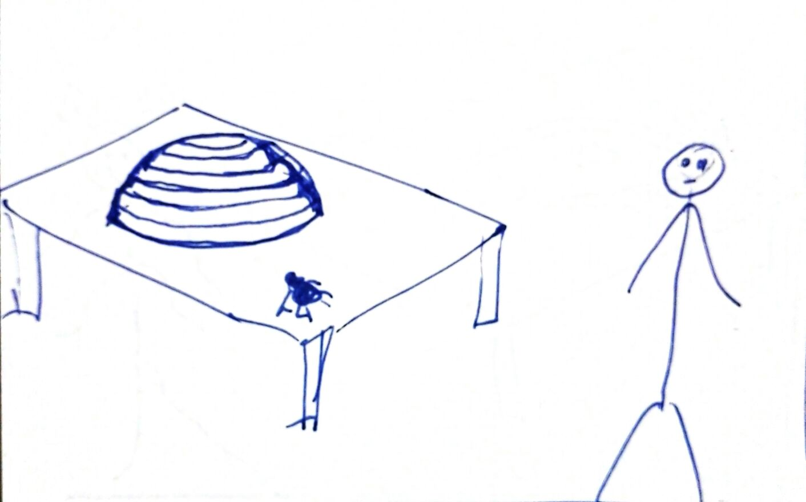
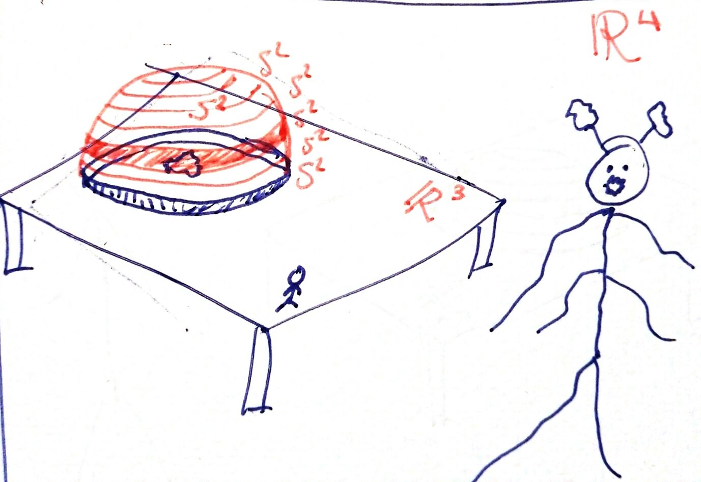

In this post, we will try to explain a little bit what it feels like to live in a 4-dimensional world. First, we will see that we can enter the inside of a normal sphere without breaking the wall. And secondly, we will try to describe what we would feel if our world were not the classic 3D universe, known as $\mathbb{R}^3$, but another 3-dimensional space called $S^3$.
But before we start, let's name things. The circles we all know have a more technical name for mathematicians: $S^1$. On the other hand, a sphere (let's say, a ball) is called $S^2$. This similarity in names is not accidental: since we were children, we intuitively knew that circles and spheres have something in common. In fact, they are "the same" except for the detail that circles are 1-dimensional (you can only move forward or backward), and spheres are 2-dimensional (if you lived in one, you could move forward-backward, but also left-right. Oops, actually, we live in one).
Now let's imagine that I want to capture an ant using a circle $S^1$ (although with some "thickness" so it doesn't escape). I put my $S^1$ on a table with food inside, and the ant arrives:

I think it is not necessary to remind you that I live in $\mathbb{R}^3$ and the ant in $\mathbb{R}^2$ (the table). Since it is a two-dimensional being (approximately), its vision is one-dimensional: in other words, a grid. So what the ant finds, from its point of view, is the following:

An observation: analogously to $S^1$ and $S^2$, mathematicians also define what would be a 0-dimensional sphere, $S^0$. It would only be two points. And one more thing: when we write a dash on top of a sphere, it means that we consider it "filled". So what is $S^1$ for us, is $\bar{S^0}$ for the ant. When it approaches, touches, and surrounds it, it may perceive, in its own way, that it is actually $S^1$, although visually it seems like a $\bar{S^0}$.
Let's go back to the first image. To catch the ant, we rotate our $S^1$. But imagine that the table and the circle are designed so that I can rotate it through the table:

For our ant, the $\bar{S^0}$ has become hollow, turning into $S^0$, and revealing food inside:

The ant goes for the food, we put the circle back to its original position, and the ant is trapped.
Now imagine that an evil superior being, inhabitant of a 4-dimensional world ($\mathbb{R}^4$) within which ours is, decides to play a similar trick on us (karma things).

Now the table "represents" our world $\mathbb{R}^3$, and the circle with food inside symbolizes an empty sphere $S^2$ in whose interior they have put food for us. From our point of view, from afar what we see is a $\bar{S^1}$, that is, a filled disc. But when we approach, touch, and surround it, we realize that it is an $S^2$ sphere. Of course, we don't see the food inside:

At some point, the evil four-dimensional being rotates its trap just as we did. What will we perceive with our limited two-dimensional vision? Well, magically the object has turned into an $S^1$, that is, a ring, leaving food inside:

When we go after it, he closes the trap and leaves us trapped inside the $S^2$ sphere... without breaking it and without opening any doors!
But let's change the subject, in case there is a claustrophobic person in the audience. We have talked about $S^0$, $S^1$, and $S^2$, objects that we have in our minds since we go to kindergarten. But now let's ask ourselves: what would $S^3$ be like? What would it feel like to live there? Well, $S^3$ doesn't fit in our 3D world, it can only live in $\mathbb{R^4}$. In the same way that $S^2$ cannot live in a plane $\mathbb{R^2}$: it wouldn't fit. Its existence only makes sense in $\mathbb{R^3}$. But we can have a certain visualization of $S^3$. Let's go back to the starting situation, our first image. The ant is not sensorially prepared to perceive $S^2$, just as we are with $S^3$, but we can help it. We are going to stack many $S^1$ on top of the one that is already there, giving rise to a cylinder. When the ant reaches the new object and sticks to it, it will have changed universes. And it will find itself in a world very similar to its own, it can move left-right, but also up-down facing gravity. The only peculiarity with respect to the table is that in the horizontal direction "I can turn around".

But if the $S^1$ that we are sticking together are getting smaller and smaller, what appears is an $S^2$:

In this case, when the ant goes from the "table universe" ($\mathbb{R}^2$) to the "ball universe" ($S^2$), it will notice changes. Now, in addition to being able to "turn around" horizontally and return to where it was, when it starts climbing, with effort, overcoming gravity, there comes a moment when it no longer has to struggle to climb: it has reached the top. However, visually it does not notice anything, these are just internal sensations, because it is an ant and its field of vision is very limited. It is struggling to climb and, at a certain point, it no longer has to struggle. In fact, it has to make an effort to stop, because as it continues to move forward, it has turned upside down, going down the other side.
Furthermore, the ant notices that when it wants to turn around the world horizontally, it is easier for it when it is higher up (because the circles are getting smaller and smaller).
But let's get back to us. Our current world, $\mathbb{R}^3$, is similar to the ant's "cylinder", in the sense that we can move around the plane (with the peculiarity that I can return to the same point if I go around the Earth). But if I go up, overcoming gravity with the help of a propulsion backpack, theoretically I could go up as much as I want.
What would we feel like living in $S^3$? Well, it would be very similar, as it is a world of 3 dimensions. We can consider that $S^3$ arises in a similar way to the hemisphere of our ant: we are sticking smaller and smaller $S^2$ to the $S^2$ that the extraterrestrial put on us:

When we are transferred to this new universe $S^3$, we will not feel anything initially. We will still feel gravity, we will still be on a ball, our planet Earth. But now, when we go up with our propulsion backpack, overcoming gravity, we will notice two things:
1. There will be a point where we will no longer feel gravity: when we reach the top. For us, visually, it will not be a peculiar point, since our vision is limited and we are not capable of seeing the 4-dimensional world like the ant with the 3rd dimension. In fact, if we move a little, we suddenly start falling! Again, visually we will not notice anything.
2. Before we start going up, no matter which direction we go horizontally, we always come back to the same point. Well, if at some point in our ascent we decide to keep the altitude constant and move horizontally in any direction, we will always come back to the same point (we are in a new $S^2$), but we would take much less time to turn around, because the $S^2$ we piled up were getting smaller and smaller. In fact, at the special point mentioned in the previous paragraph, an entire $S^2$ has collapsed.
To conclude, a final question: is it worth spending time thinking about all of this? Well, yes. Firstly, because we don't actually know the shape of our universe, but what is certain is that it's not $\mathbb{R}^3$. So, it's good to imagine alternatives to see if we can figure out what it is. And secondly, because there are physical and mathematical situations where the object $S^3$ appears, and it's important to know what it is. For example, the collection of all rotations of three-dimensional objects is almost $S^3$. Understanding rotations of objects in space is very important for physics or for creating a video game.
________________________________________
________________________________________
________________________________________
Author of the notes: Antonio J. Pan-Collantes
INDEX: